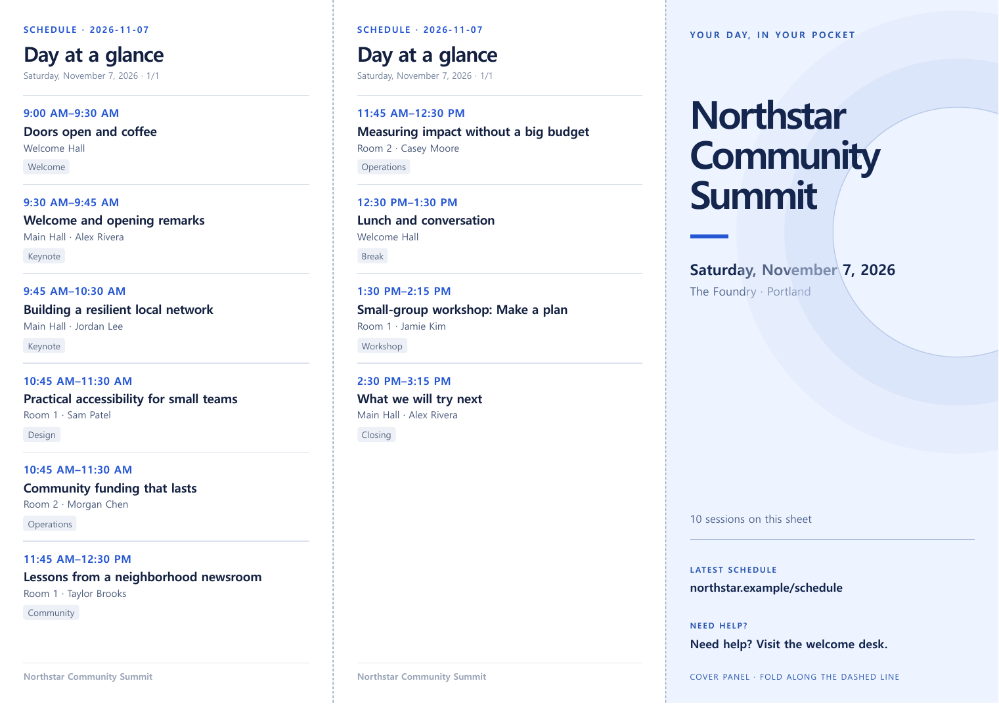

01 / SOURCE
Prepare one dependable schedule table
Put one public agenda entry on each row. Keep a single source of truth for the final event time. Use separate day, start and title columns; add end, room, speaker and track when useful. Save or export as CSV.
| Column | Example | Why attendees need it |
|---|---|---|
day | 2026-11-07 | Keeps each day’s program separate. |
start, end | 09:45, 10:30 | Shows when to arrive and leave. |
title | Building a resilient local network | Identifies the session without a long abstract. |
room, speaker | Main Hall, Jordan Lee | Helps people choose the right door. |
track | Keynote | Lets readers scan the kind of session. |
Parallel sessions can share a start time; keep them as separate rows. Mark a break or lunch as its own row if people need to plan around it. Before exporting, check time zone, room changes, title spelling and any last-minute cancellations against the event’s current schedule.
The example is fictional. It includes two concurrent room pairs and opens in common spreadsheet apps.
02 / LAYOUT
See the actual one-page output
This is an A4 landscape, single-sided PDF made from the fictional CSV above. The two left panels carry the schedule; the right panel is the cover. Use the image to inspect the structure, then open the PDF at full size to judge text and margins.

Longer days may need continuation sheets. Do not shrink type until it is unreadable just to force everything onto one page. An at-a-glance handout is different from a full program booklet with abstracts and biographies.
03 / FOLD
Fold the printed side into three panels
Lay the A4 or US Letter sheet flat in landscape with the printed side facing up and the cover at the right. Fold on the vertical guides: move the right cover panel behind the middle panel, then fold the left schedule panel over the middle. Turn the packet over to see the cover. Check the result with one test sheet before printing many copies.
This is a one-sided handout. A double-sided booklet needs a different page order and printer alignment.
04 / PRINT
Print proof checklist
The boxes work only in this browser tab. No checklist data is saved or sent to us.
DETAILS
Common questions
Can a CSV make the folded design automatically?
A CSV holds rows, not page layout. You can lay it out manually in a design tool. Our Pocket Agenda Studio is a $4.90 offline browser kit that imports the CSV, builds the three panels and adds sheets when necessary. Check its sample and requirements before buying.
Can I use a public timetable URL instead?
The kit imports a CSV file or pasted CSV text. It does not scrape a public timetable URL. Export the schedule from your spreadsheet or event system first.
What if the schedule changes after printing?
Update the CSV, generate a new PDF, compare the changed rows and replace older handouts where practical. Put a short current-schedule link on the cover so attendees can find updates.
The CSV and PDF are fictional examples from Schedule Press. The folding and printer steps are a practical workflow for this one-sided layout; test your own paper, printer and final schedule. No affiliation with an event platform.